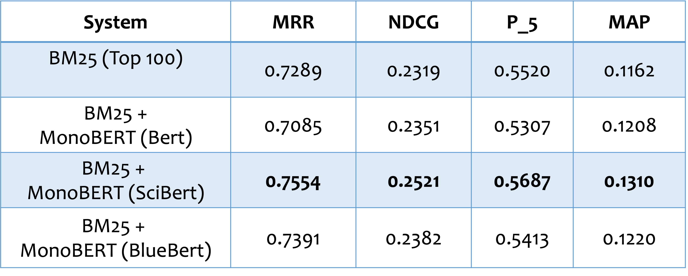
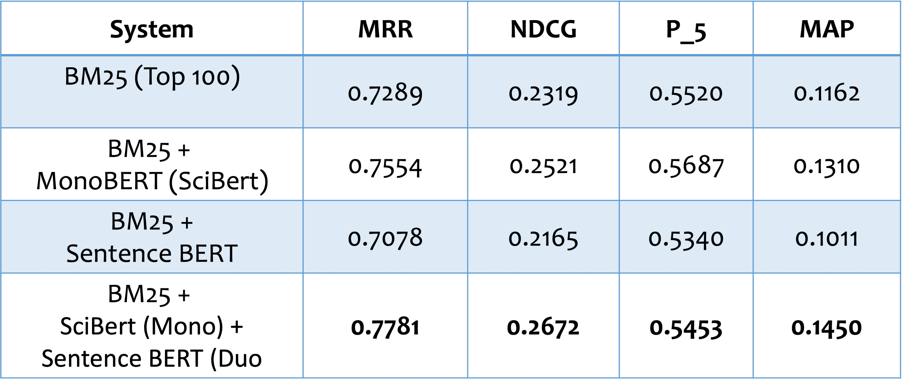
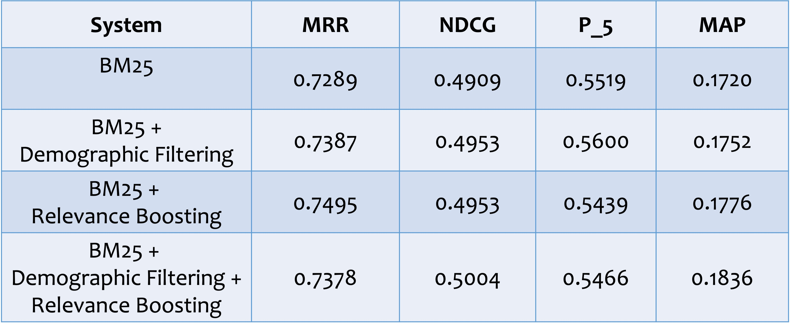

Experimental results
Different Sections of CTRs (SIGIR dataset)
Different Types of Topics (SIGIR dataset)

Re-rank System Performance (TREC dataset)

Re-rank System Performance (TREC dataset continued)

Search System Performance (TREC dataset)

Conclusion
From above experimental results, we can see that our proposed models achieve relatively decent performance. However, due to the complexity of the matching clinical trials in nature, there are still many limitations and improvements open.
Future Work
For future work, in addition to improving performances via techniques in Natural Language Processing or recommendation system, one possible solution is to integrate other data structure, specifically graph in this case.
Inspired by Chang (2021) where similarity between patients are calculated and studied, we propose to apply similar idea for comparing the topic and the clinical trial:
Pairs of clinical trial and the patient information will be represented both via Snomed CT graph database and a text encoder where BERT-based ones are desired choices. After application of Graph Convolutional Network (GCN) , outputs from both encoders will be concatenated and passed the vector to a fully connected layer. A semantic similarity score can be obtained from this vector.